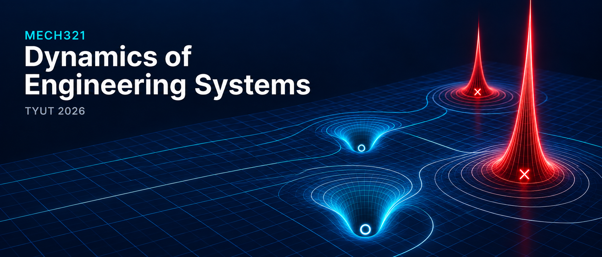

01
MODELLING

Teaching sequence
Student edition: each class links to lecture slides, tutorial questions and home reading as PDF files. Classes 9–10 are optional extensions.
MODELLING
LAPLACE
INVERSE LAPLACE · SUPPORT
REPRESENTATION
TIME RESPONSE
FREQUENCY RESPONSE
ACTUATOR MODEL
FEEDBACK
STABILITY
ROOT LOCUS OPTIONAL
PID CONTROL OPTIONAL
Interactive learning
Move the system parameters and connect pole locations with time and frequency response.
Assessment
| Component | Course weighting |
|---|---|
| Project 1 | 16% |
| Project 2 | 16% |
| Tutorial 1–8 submissions (1% each) | 8% |
| Final examination | 60% |
| Total | 100% |
Tutorial credit: each submitted Tutorial with a substantive attempt earns 1 percentage point, regardless of correctness. No credit is given for a missing or blank submission or copied question text only. All eight count; no scores are dropped. Tutorials 9–10 are optional and carry no submission credit.
Each project is marked out of 100 and contributes its score × 0.16 to the course total. Project 2 retains up to 10 optional bonus marks, capped at a project score of 100. The Practice Exam is preparation only and does not count towards the course grade.
Applied assessment
Use the brief and MATLAB files from the same project folder.
Build a seat model from a four-wheel vehicle, component masses and spring connections, then test the design.
Open project PDF ↗Download project and MATLAB files ↗Model the actuator, analyse the stated P feedback and Nyquist stability, then judge voltage and load feasibility. The project ends after core Class 8.
Open project PDF ↗Download project and MATLAB files ↗Both projects are individual assessed briefs with staged milestones. Use the student briefs and submit the evidence requested by your teacher.
Documents